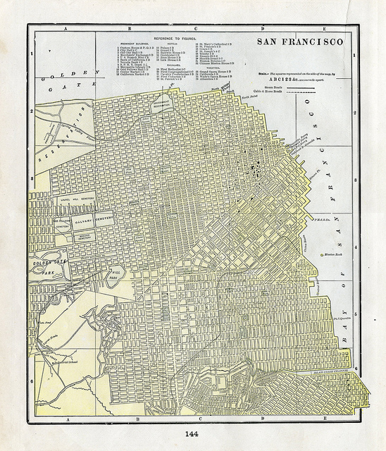

ASA Datathon
Big cities, big data:
Big opportunity for computational social science
15-16 August 2014
UC-Berkeley D-Lab // Hilton Union Square
// Image via Eric Fisher
A new opportunity for social science
Just before the American Sociological Association's annual meeting in San Francisco, we are holding a datathon to examine contemporary urban issues - especially around housing - with municipal data from cities including San Francisco, New York, Seattle, Boston, Austin, and Chicago.
Our title implies an interest in “big cities” but honestly, we’re more interested in real estate and housing data. Because a majority of the population lives in cities, cities will likely be important focal points in many of the projects that come out of the datathon. We’re hoping some teams focus on rural areas, too. Questions that we’ve considered include:
- How are home buyers different now compared to home buyers ten years ago? Can the recession explain any of these differences? If so, would we expect a home-buying rebound or did the recession combine with other trends (increasing amount of student loan debt) to cause a permanent change in home buying patterns?
- Who buys homes in rural areas? Are there halos of second-home buying around major cities? Around major airports? What kind of impact does this have on rural economies?
- Are there md industries that drive housing patterns? For instance, the tech industry is under fire in San Francisco right now for accelerating gentrification. Is this historically accurate? How does it compare to industries like the financial sector influencing prices in the New York metro area? Are these stories about single industries influencing real estate ecosystems oversimplifying more complicated patterns?
- How does access to natural resources – and proximity to natural disasters – shape purchasing decisions, if at all? In other words, is there evidence that buyers take natural risks into their value considerations?
These are just some questions we’ve tossed around among ourselves. We’re sure our participants will come up with other great questions that use real estate and/or housing data.
Who should apply?
Social scientists, data scientists, computer scientists, municipal staffers, start-up employees, grad students, and data hackers of all stripes. Quantitative + qualitative types are welcome.
People with experience doing research design, data management, statistical research, textual analysis and/or computational research are strongly encouraged to apply.
Once you are accepted, expect to work with 2-4 other people from different disciplines on a common problem related to contemporary urban issues. No technical experience needed -- just come and be willing to contribute!
What is a datathon?
A datathon is an intense 24-hour workshop that asks researchers to do their best to turn information into knowledge. It’s a format modeled after hackathons. The difference is that datathons use research questions and datasets to advance knowledge, not to launch apps.
At a datathon, participants work in teams to frame a research question, create and implement a research design, mobilize data resources and present their findings in front of a panel of judges.
Why is a datathon a good idea?
Datathons allow social scientists to test new research ideas and meet potential collaborators in a working environment without requiring a great deal of commitment. Ideally, a datathon is an intellectual testing pit full of the data and constructive criticism it might take months to sort out otherwise.
What happens to the work that gets done during the datathon?
Researchers are welcome to continue working on their projects after the datathon, but the goal is to have a complete or nearly complete document, image, or other deliverable (podcast? video? dataset? manifesto?) that is ready for distribution.
Schedule
Friday / UC-Berkeley D-Lab
| 13:00-13:30 | Welcome, intros, review of the rules |
| 13:30-14:00 | Intro to datasets |
| 14:00-14:30 | Sponsor introduction |
| 14:30-15:00 | Teams convene, transfer data, troubleshoot |
| 15:00-18:30 | Work session |
| 18:30-19:30 | Dinner |
| 19:30-22:30 | Work session |
| 22:30-23:00 | Snack break |
| Overnight | Up all night to get done |
Saturday / D-Lab AM, Hilton PM
| 9:00-9:30 | Breakfast at the D-Lab |
| 9:30-12:59 | Final work session |
| 13:00 | Final commit! |
| 13:00-14:00 | Lunch |
| 14:00-16:00 | Nap...zzzz |
| 18:30-20:30 | Judging at Hilton Union Square (SF), Fourth Floor, Room 3-4. |
| Afterparty | Up all night to have fun |
Hosting Sponsor